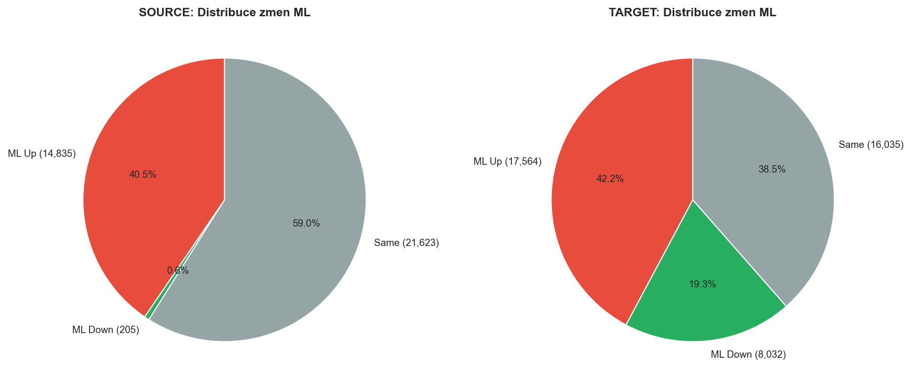
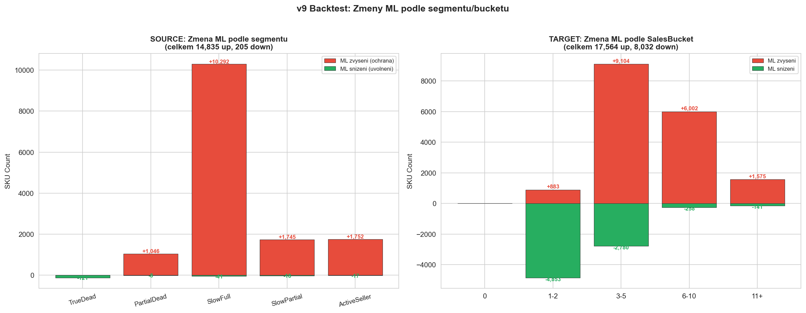
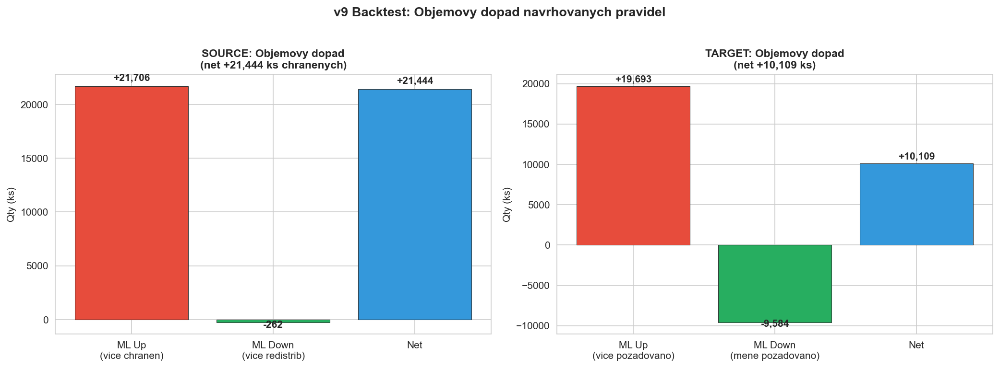

CalculationId=233 | ApplicationDate: 2025-07-13 | Generated: 2026-03-22 20:30
Porovnani navrhovanych ML pravidel (z decision tree) s aktualnimi ML hodnotami. Backtest ukazuje objemovy dopad — kolik ks by bylo vice/mene chranenych/redistribuovanych.


| Segment | Store | SKU | ML Up | ML Down | Same | Up Qty | Down Qty | Smer |
|---|---|---|---|---|---|---|---|---|
| TrueDead | Weak | 5,233 | 0 | 26 | 5,207 | 0 | 29 | ↓ |
| TrueDead | Mid | 8,240 | 0 | 53 | 8,187 | 0 | 66 | ↓ |
| TrueDead | Strong | 4,912 | 0 | 42 | 4,870 | 0 | 49 | ↓ |
| PartialDead | Weak | 940 | 0 | 1 | 939 | 0 | 1 | ↓ |
| PartialDead | Mid | 1,610 | 0 | 4 | 1,606 | 0 | 5 | ↓ |
| PartialDead | Strong | 1,049 | 1,046 | 3 | 0 | 1,464 | 3 | ↑ |
| SlowFull | Weak | 2,122 | 1,967 | 11 | 144 | 2,465 | 13 | ↑ |
| SlowFull | Mid | 4,697 | 4,294 | 21 | 382 | 5,632 | 37 | ↑ |
| SlowFull | Strong | 4,044 | 4,031 | 9 | 4 | 5,583 | 10 | ↑ |
| SlowPartial | Weak | 421 | 338 | 5 | 78 | 503 | 5 | ↑ |
| SlowPartial | Mid | 800 | 595 | 8 | 197 | 878 | 14 | ↑ |
| SlowPartial | Strong | 817 | 812 | 5 | 0 | 1,306 | 6 | ↑ |
| ActiveSeller | Weak | 99 | 90 | 0 | 9 | 151 | 0 | ↑ |
| ActiveSeller | Mid | 431 | 426 | 5 | 0 | 996 | 7 | ↑ |
| ActiveSeller | Strong | 1,248 | 1,236 | 12 | 0 | 2,728 | 17 | ↑ |

| Bucket | Store | SKU | ML Up | ML Down | Same | Up Qty | Down Qty | Smer |
|---|---|---|---|---|---|---|---|---|
| 0 | Weak | 139 | 0 | 0 | 139 | 0 | 0 | = |
| 0 | Mid | 341 | 0 | 0 | 341 | 0 | 0 | = |
| 0 | Strong | 254 | 0 | 0 | 254 | 0 | 0 | = |
| 1-2 | Weak | 1,972 | 0 | 1,478 | 494 | 0 | 1,664 | ↓ |
| 1-2 | Mid | 4,507 | 0 | 3,375 | 1,132 | 0 | 3,733 | ↓ |
| 1-2 | Strong | 3,640 | 883 | 0 | 2,757 | 894 | 0 | ↑ |
| 3-5 | Weak | 2,601 | 0 | 2,442 | 159 | 0 | 2,781 | ↓ |
| 3-5 | Mid | 7,760 | 434 | 338 | 6,988 | 440 | 532 | ↑ |
| 3-5 | Strong | 9,052 | 8,670 | 0 | 382 | 9,451 | 0 | ↑ |
| 6-10 | Weak | 879 | 51 | 258 | 570 | 51 | 439 | ↓ |
| 6-10 | Mid | 3,319 | 2,385 | 0 | 934 | 2,604 | 0 | ↑ |
| 6-10 | Strong | 4,835 | 3,566 | 0 | 1,269 | 3,849 | 0 | ↑ |
| 11+ | Weak | 178 | 4 | 141 | 33 | 4 | 435 | ↓ |
| 11+ | Mid | 806 | 223 | 0 | 583 | 261 | 0 | ↑ |
| 11+ | Strong | 1,348 | 1,348 | 0 | 0 | 2,139 | 0 | ↑ |